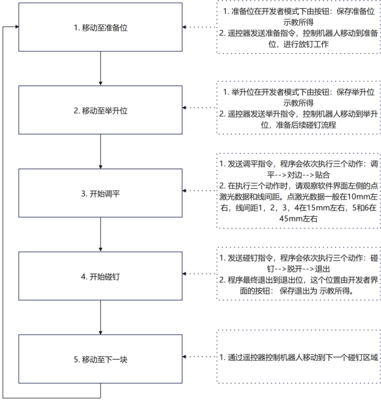

介绍
欢迎使用本程序！本文档将帮助您快速了解如何使用本程序及其主要功能。
操作流程

常见问题
- 问题：
- 在调平阶段和对边阶段，注意观察各轴实时位置，如果没有发生变化，很可能是某一个轴到达限位。
- 解决方法：
- 发送终止指令，使机器人状态跳转到手动--就绪状态，手动调整达到限位的轴。情况分为两种，达到最大限位和最小限位。如果最大限位，则适当调小，反之调大。
- 问题：
- 前后轴或左右轴容易到达限位，超负载导致抱闸
- 解决方法：
- 在进行位置点示教时，要注意前后轴和左右轴的位置，一般在零位，在示教举升位时，腰俯仰一般在90度，使机器人受力更均衡。
- 问题：
- 调平时间过长
- 解决方法：
- 在设置举升位时，一般点激光数据在100毫米左右。操控机器人向壁面运动到达举升位时，优先使工具升降向正方向运动，务必使底部升降在5mm左右。这样壁面机器人重心上移，增强机器人稳定性。
- 问题：
- 对边时间过长
- 解决方法：
- 在进行调平和对边之前，先观察线间距，尽量保证线间距1，线间距3，线间距2，线间距4数据都在30mm以内，线间距5和线间距6在70mm左右，这一阶段是通过人工手动操控机器人，可以称为粗调整。这样做可以减少对边的作业时间，提升作业效率。
- 问题：
- 状态跳转指示
- 解决方法：
- 状态显示为蓝色是处于手动--就绪状态，表示可以进行新的碰钉作业。 状态显示为黄色是正在进行碰钉作业，不可进行新的碰钉作业。